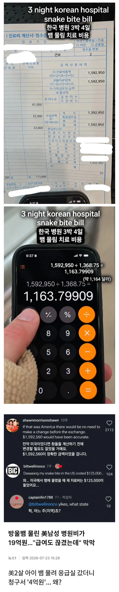

https://bbs.ruliweb.com/best/board/300143/read/76600552

https://bbs.ruliweb.com/best/board/300143/read/76600552

한국은 보험 적용이 모든 병원에서 다 되는데
미국은 지정 병원이라서 다른데서 치료 받으면 망함 ㅋㅋㅋㅋ
그럼 너는 뉴암스테르담이야!
의료 소송이 늘어남 -> 의료소송 리스크가 청구서에 반영됨 -> 보험없이는 내기 버거워짐 -> 보험으로 비용을 낼 수 있게 되었으니 청구액이 더 올라감 -> 의료보험 없이는 살 수 없게 됨 -> 의료보험 가격을 올림
여기에 관련된 사람들
1.의사 2.변호사 3.금융가
미국에서 공부 제일 잘하는 의대 법대 경영대 ㅋㅋㅋ
의료소송의 역설이지
의료소송이 활발해질수록 공공의료는 파괴된다는 것
ㄴㄴ 의사는 별 관련없음. 사설보험사가 더 연관성이 크지.
변호사 시장 폭발적 증가로 인한 소송 증가. 변호사들은 의료사고인지 진짜 과실인지는 상관없음. 소송의 승자는 지든 이기든 수임료 받는 변호사 -> 한국은 정부 지정가격제로 소송리스크 반영이 불가 -> 바이탈과 의사들이 응~ 그럼 안해.
루프타고 있음. 사람 사는데가 똑같지.
살인마 <<<< 뱀
네 정말 감사합니다 시발ㅋㅋㅋㅋㅋㅋㅋㅋㅋㅋㅋㅋ
미국은 병원비가 싯가인가..
뭐더라 무슨 인형 대여비 해놓고 수천 달러 씩 추가하고 병원비가 너무 과하다 낼수 있는 처지가 못된다 하면 1/3로 줄어든다 하던데
일단 비싸게 부르고 원무과장이랑 흥정함 당근네고마냥 최대 90퍼까지도 할인받은 사람도 있다고함 ㅋㅋ
한국이 엄청 저렴하긴 한데, 그래도 미국이 너무 지나치게 비싸
개인 보험이 줜나 비싸서
회사에서도 많이 내준다카더만...
협상하면 많이 깎아주긴 한다더라 1억을 몇백만원 수준으로 깎는거도 어디서 본거 같은데
진짜로 치료 못해서 그냥 죽거나 빚쟁이행이고 그럼? 궁금하네
식코라는 영화 있을정도로 미국 의료는 유명함
캐나다로 도망간다거나 의료비 때문에 파산하거나
편의점에 의료키트를 판다거나
재작년에 맹장수술 130인가 나왔는데
1.3억이 되는건가 싶어 검색해보니 진짜 1억정도네 ㄷㄷ
앰뷸런스도 한국은 무료인데 미국은 30인가
뭐 수술하고 곰인형 대여도 몇십만원 나오고
엠뷸은 상황에 따라 진짜 돈 부과해야되지 않나 싶을 때 있음..
미국서 어마어마하게 큰 로또 당첨 된 사람이 당첨금으로 제일 먼저 하고 싶은일이 가족을 풀커버 되는 의료보험 가입시키는거 였음.
병원가면 듀얼 해야됨
ㄹㅇ 아가리로 흥정가능
곧 미국 가는데 무급이긴해도 병가는 넉넉히 쓰게 해주더라. 수틀리면 비행기 타고 다시 왔다가라는건지ㅋㅋㅋㅋㅋ
다치면 뱅기타고 한국오는게 싸네
ㅇㅋ 판타스틱 땡큐 ㅋㅋ
심하게 다쳤는데 구급차 못부르고 억지로 걷다가 기절해서 어쩔 수 없이 주변 사람들이 불러주는 꼴 보니깐 뭔가 기본 인권이 없는 느낌이더라;;;
근데 진짜로 10억씩 나오면 어떻게 됨? 평생 노예처럼 일해서 갚아야하는건가?
보험으로 떼움 보험이 없거나 위 기사처럼 회사에서 짤려서 회사보험으로 커버가안된다면 의사랑 딜을해서 노후랑 맞바꾸면됨
예전에 보험금 미지급으로 CEO인가 죽인 사건 보면 지급율이 절반도 안된다던데 진짜 그딴식으로 시스템이 되어있다는게 믿기지가 않음
근데 뱀물릴때마다 10억씩 내줘야되면 보험회사도 금방 파산할거같긴 하다
미국 의사들은 총 안맞음?
싸서 논란이여? ㅋㅋ
쟤들은 병원 가면 의사랑 협상하더라
식물인간 같은 환자 연명치료는 다달이 수억씩 나가겠네?ㄷㄷ
외국인이라서 150만원이지 건강보험 적용됐으면 30일듯
좋아하는 유투버중에 애리조나주영이라고 미국아재랑 결혼한분 있는데.. 딸이 시카고 병원에서 수술하고입원했는데 일주일 병원비 정산하는거보니 1억4천 나오더라. 심지어 고지서가 다 온게 아니라고.. 남편이 그래도 우린 보험있으니까 어쩌구 하던데 그래도 자기부담금 천만원 정도라고..얼탱..
남편 응급실 하루 잔적있는데 그것도33000불(4천700) 나왔다캄..
https://youtu.be/SsLJkPDrcnA?si=G8pVWKWGEnSQqlTl
대충 6:50 부터
저런거보면 미국사람은 급하면 걍 한국와서 치료 받고가는게 더싸게 먹히겠다 싶더라 비행기값 비싸도 300정도일건데 그편이 더나을듯
많은 미국인들이 힘들어하고 있는데 저런 의료보험 하나도 제대로 개편 못 하는거보면 참 씁슬하다
그러고보니 오바마케어는 망했나?
전화로 깎아달라니까 깎아주기도 하더만 가격이 존나 지맘대로임
보통은 보험 멀쩡히 잘 있는데 보험사에서 보험지급 거절 때려서 하층민 되는 경우가 많음.....